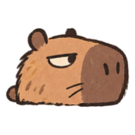

See when it’s ready.
Doodles move while an agent works. A green check stays until you open that chat through ZooCove.

ZooCoveSee what’s running and what’s ready across Codex, Claude Code, and Pi, all in one row.
Doodles move while an agent works. A green check stays until you open that chat through ZooCove.
Discover Codex and Claude Code profiles managed by Cockpit, or add a local profile yourself.
Pick from 16 doodle animals or use a project icon of your own.